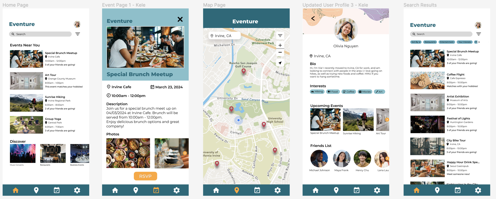
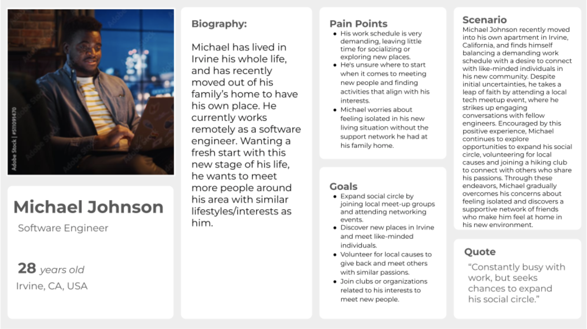

- Many people who move to a new location often struggle to find connections with other people and things to do simply because they are unfamiliar with the area, and have no motivation to explore on their own.
- We want to encourage relationships and connections between people who share the same common interests.

Eventure
An application dedicated to fostering organic
connections between community members through live events.
Project Statement
How might we help people living in a specific area find events or places to go
to connect and form relationships with other community members?
Project Scope
Why develop a solution for this problem?
Stakeholders
People moving into a new city, students who can connect with each other, people
with shared interests or passions, people interested in activities like community activities
Competitive Analysis

What gap we identified
Although each app in our competitive analysis addresses many different aspects of
social interaction, there is a clear gap in solutions designed for people who have moved to a
new city and are seeking to make friends within their new community. Both Meetup and BarkHappy
target particular groups of people; Meetup is for event planners, while BarkHappy is for dog
owners. Moreover, The Nudge offers suggestions for activities, but it doesn't place much focus
on developing new friendships.
Bumble, primarily a dating app, offers a friendship version where
people can meet others with similar interests, but it is not explicitly designed for those
recently relocated. Instagram and Snapchat are for general social media as they lack features to
help people with similar interests connect with one another. Identifying this gap, our proposed
app aims to provide a platform dedicated to assisting people who have recently moved to connect
with others in their new area, ultimately fostering meaningful friendships.
User Research
Our user research aimed to gather insights from individuals who had recently moved
into a new city, those who have moved before, and natives who wish to connect with their
community. We seeked to address the following key aspects through a series of structured
interviews:
- Moving Experience
- Social Connection Strategies
- Activities Preferences
- Interaction with current community members
- App Adoption Potential
The insights we gathered made it evident that our original problem statement did
not align with the needs of our target users and needed some refinement. The interviews revealed
nuances in how people approach moving to a new city and connecting with their community members.
We decided to modify our problem statement to better reflect our users' frustrations and ensure
our design process was addressing the real challenge our stakeholders faced.
Some key quotes from interview participants:
- “I expand my social setting if I go to a constant spot regularly and if I see familiar faces, like at the gym.”
- “I have trouble approaching people. I have a little bit of social anxiety, so it takes me a while to say hello.”
- “I’m not comfortable interacting with people I’ve never met over the internet. There’s online actors, and you don’t know if there’s predators or catfishes- just can’t really trust online strangers.”
- “No, I don’t really interact with my neighbors, it’s very awkward.”
These quotes helped identify pain points that would modify our problem statement
in subsequent iterations. One of the key things that we identified is that many of our interview
participants were hesitant to meet up with someone that they’ve only met online, citing safety
as their main concern. Many participants also stated that they meet friends through mutuals and
by going to locations that they frequent. Because of these insights, our team shifted our focus
from trying to help people make friends through the application to encouraging people to attend
local events or restaurants to potentially make connections at those locations. We focused on
the organic nature of how friendships develop rather than trying to force people to be
compatible over a phone screen.
Creating Personas

Prototypes and Design
Low-Fidelity Prototypes
Our low fidelity prototype sketch consists of the event map, filters bar ,and
description about the event. This sketch represents the basic layout or design of the
application.
Mid-Fidelity Prototypes

These sketches show our main 3 screens: the home screen, the map, and the user
profile page.
High-Fidelity Prototypes
After designing the mid-fidelity prototypes and agreeing that we wanted to use the
layouts given in our high fidelity prototype, we began to draft up what could be our final
design on Figma. To start this process, we met to choose a color scheme as well as a font to use
for our high fidelity prototype. This allowed for consistency across the different interface
screens as we worked on our different pages. We incorporated many affordances, with clear
navigation icons on the bottom that are clickable, as well as a clear search bar.